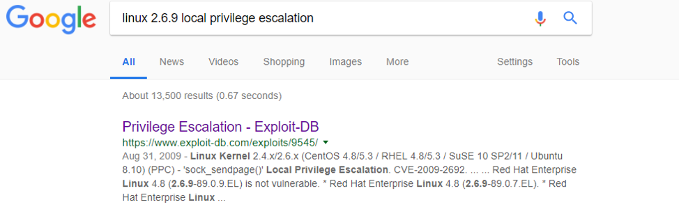

Phase 1 Recon: Collecting information about the target
Get our IP by using ifconfig, and then use nmap to scan the range of possible IP's.
We can see now that the target IP is: 192.168.232.134
Phase 2 Scanning: Discover OS, open ports, and running services
Now we can use nmap to scan the open ports on our target. Sometimes the -A tool can produce an overwhelming amount of results, so this time we will use nmap -A (all information) -p (ports) [ip] to specify which ports we want to get our information from. We are listingall of the ports found in the initial scan.
Now we see the open ports, the services that they are running, and the operating system. We know the:
- Open Ports
- Port 22: Secure Shell for remote access to the terminal
- Port 80: Standard port used for web servers, this one is running an Apache web server v. 1.3.20
- Port 111: Used for rpcbind, a utility that maps remote procedure calls(RPCs) to their corresponding addresses onthe server in order to carry out function calls.
- Port 443: This is another port serving a webpage with the same informationas port 80
- Port 631: CUPS (Common UNIX Printing System) allows a system to act like a print server, accepting jobs and sending them to the correct printer, using Internet Printing Protocol (ipp).
- Port 3306: MySQL is an open source database system used on webpages and servers. It uses SQL, a standard database language, for management of the database.
- Operating System
- The machine is running a version of Linux 2.6x
Phase 3 Enumeration: A more active way of gathering information
We will now be connecting to potentially vulnerable ports to gather more information about our target machine.
- Port 80: HTTP/WEB
The webpage is serving a login page. Since we know that the machine is also running a MySQL server its is likely that we can use a technique called SQL Injection to get a successful login. SQL Injection works much like the command line injection introduced in the Rickdiculously Easy VM, making it possible to inject our own SQL commands to the server. SQL works by retrieving records in the database that match the information entered. We can use a statement that in SQL syntax always returns true, to make it seem like we’ve entered the correct password. Therefore by using Username = test (we can use ANY username we like) and Password = ‘ or ‘1’=’1 in the password, we are able to login to the page. The first apostrophe ‘ ends the statement, then using SQL specific syntax or '1' = '1, to say that the password is true. This allows us to login to the page, which redirects us to this page.
This is a simple page that pings, sends information (packets), to a specific IP to make sure that the IP can receive and accept requests. Let’s ping ourselves to see what’s happening.
So we can see that the machine is pinging our target machine. Let’s try some command line injection to see if we can get the target to execute our code. Using ; cat /etc/passwd we were able to get the passwd file, but using ; cat /etc/shadow we are unable to get the shadow file.
Lets try setting up a reverse shell using the same technique from Kioptrix Level 1.
So we effectively set up a listener from our attack machine and connected to it from our target using bash. Now that we are in lets check to see what user we are logged in as using whoami.
Well we aren’t root, but since we are in the system lets see if there are any Privilege Escalation Exploits that we can use. Using what we know about the operating system I used Searchsploit to see if I could find something, however the results for searchsploit Linux 2.6 local were overwhelming. Lets narrow down our search and see if what version we are running using the uname command and the -a flag to get the kernel version.
Since the searchsploit results were too plentiful, lets try google, to include more search terms.
The first page that came up looked promising.

Lets try this on our target. We can download this exploit to the target from our shell using wget. I moved to the tmp directory but it can be downloaded into any file.
Before we can compile the file we need to change its name, which we can do using the mv command, to include the .c file extension.
Lets run it!
Again checking our status using whoami, we see that we have root. To establish persistence, we can use the useradd command like in the previous level. This time we cannot execute it from anywhere using the ./usr/sbin/useradd, but by simply navigating to the file cd ~/usr/sbin (~ meaning root) we can execute ./useradd like before.
Now we can log in anytime we want with root privileges.